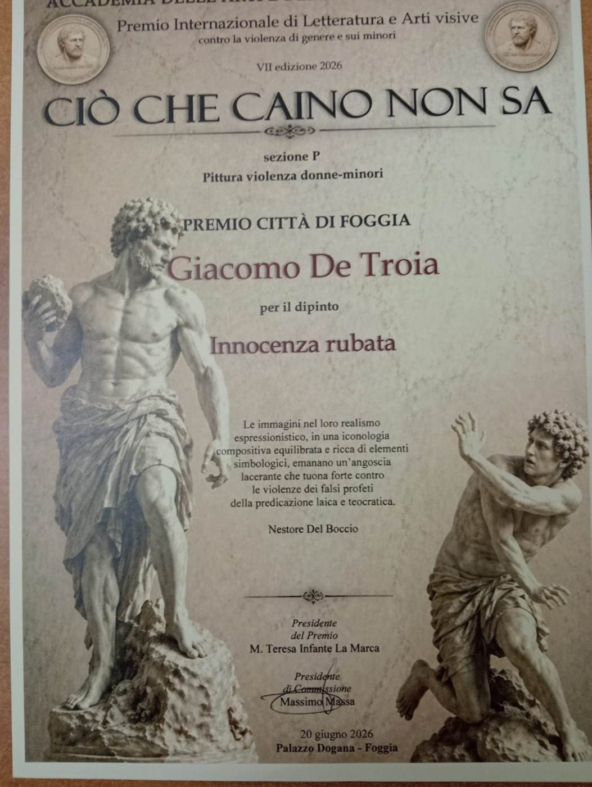
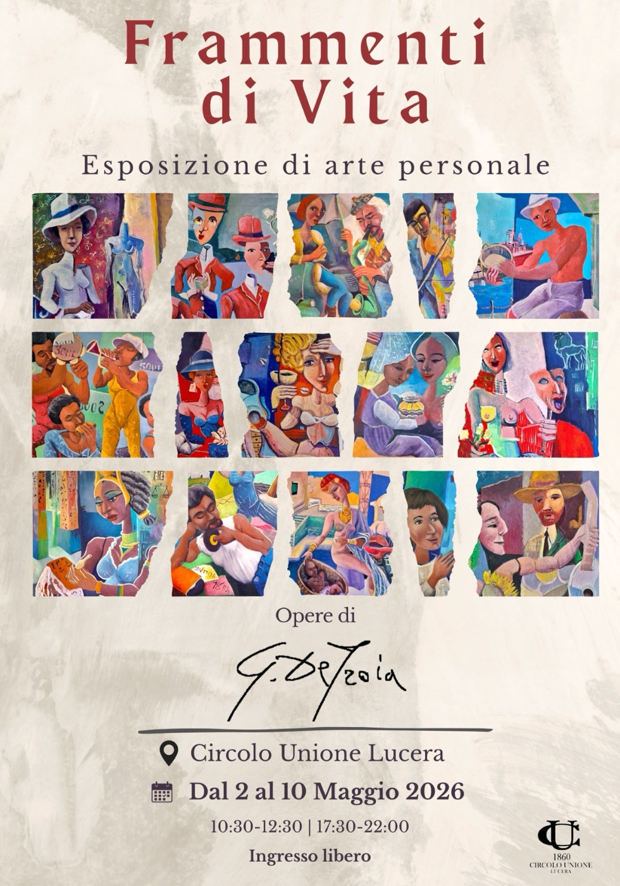
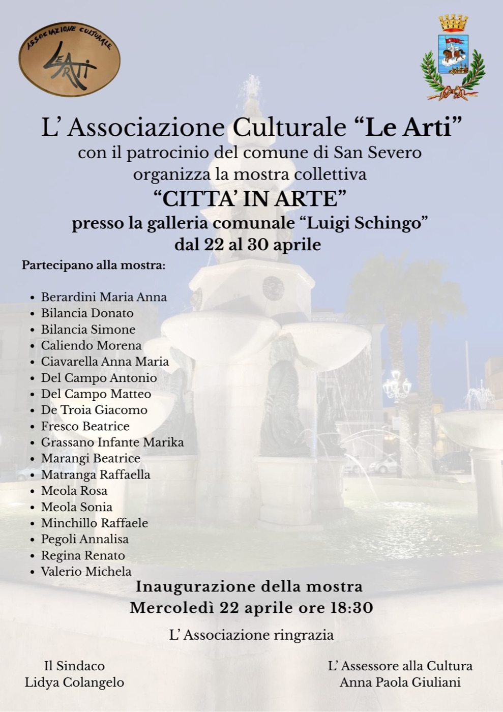
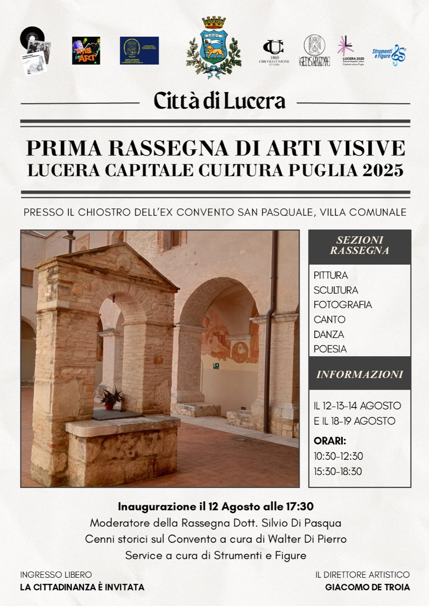
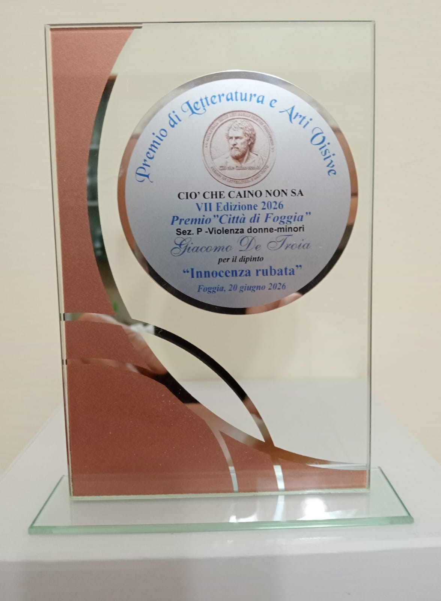
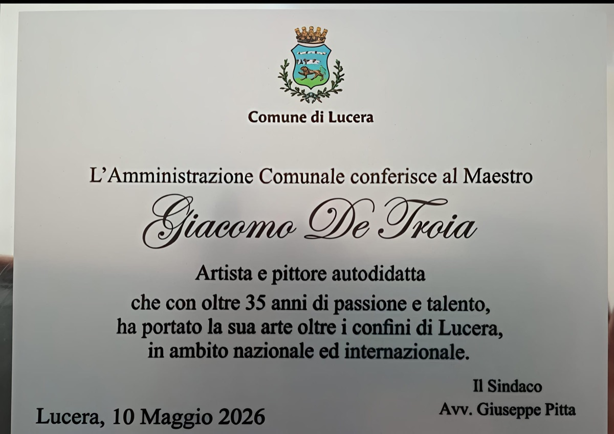
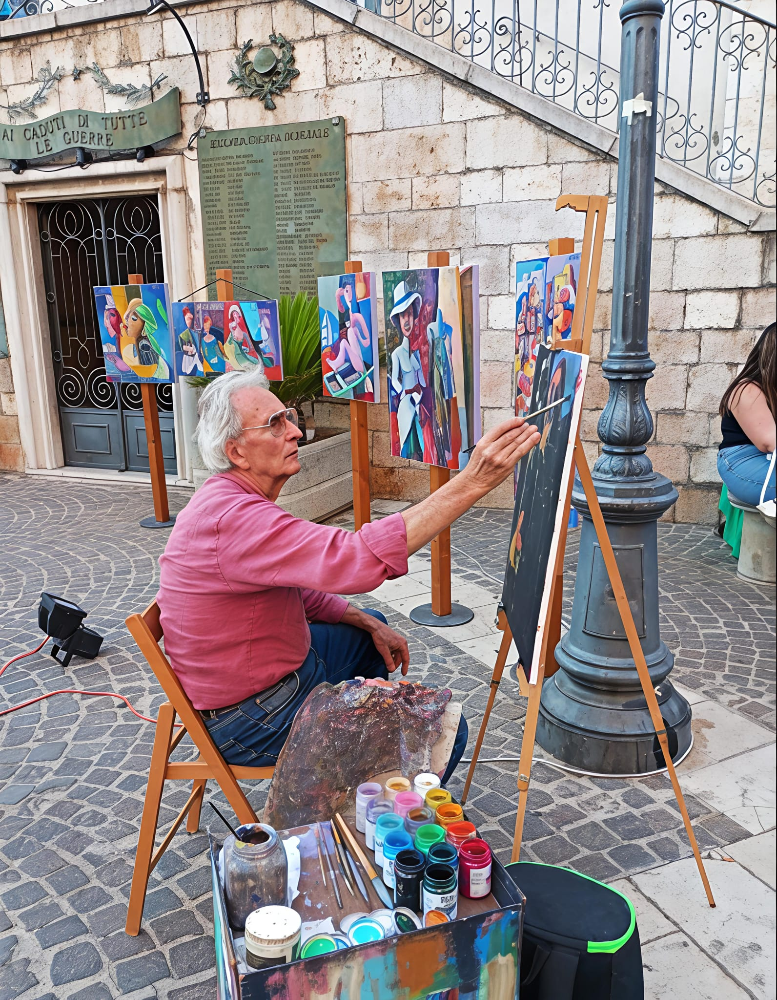
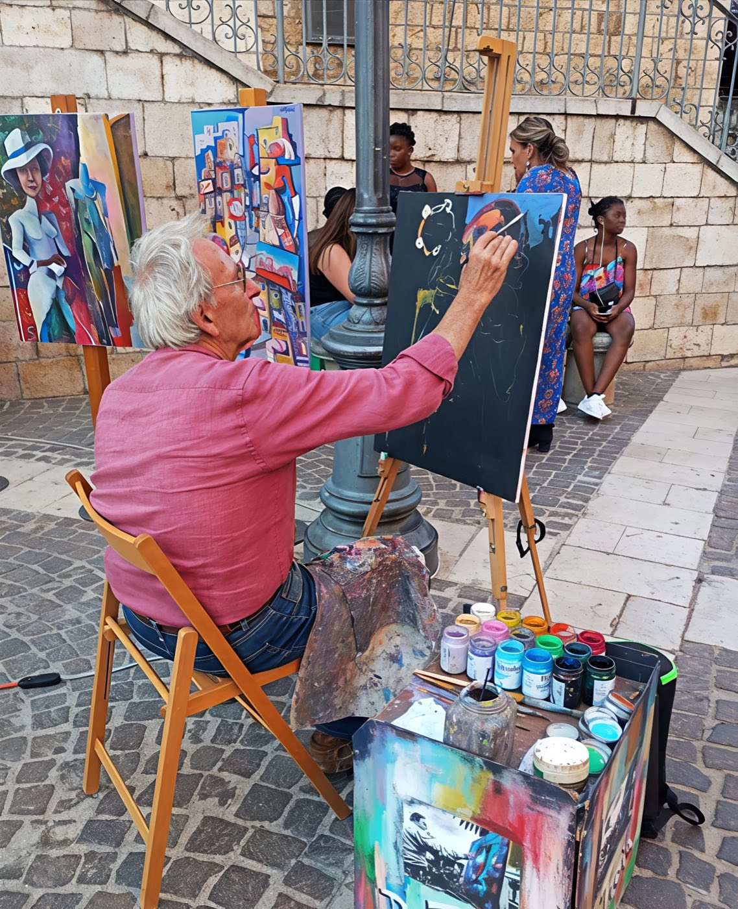
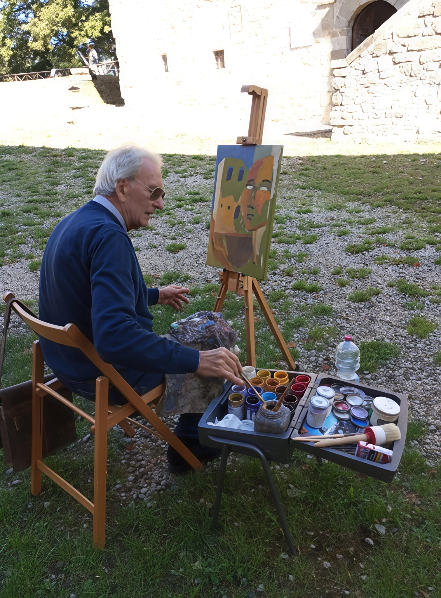
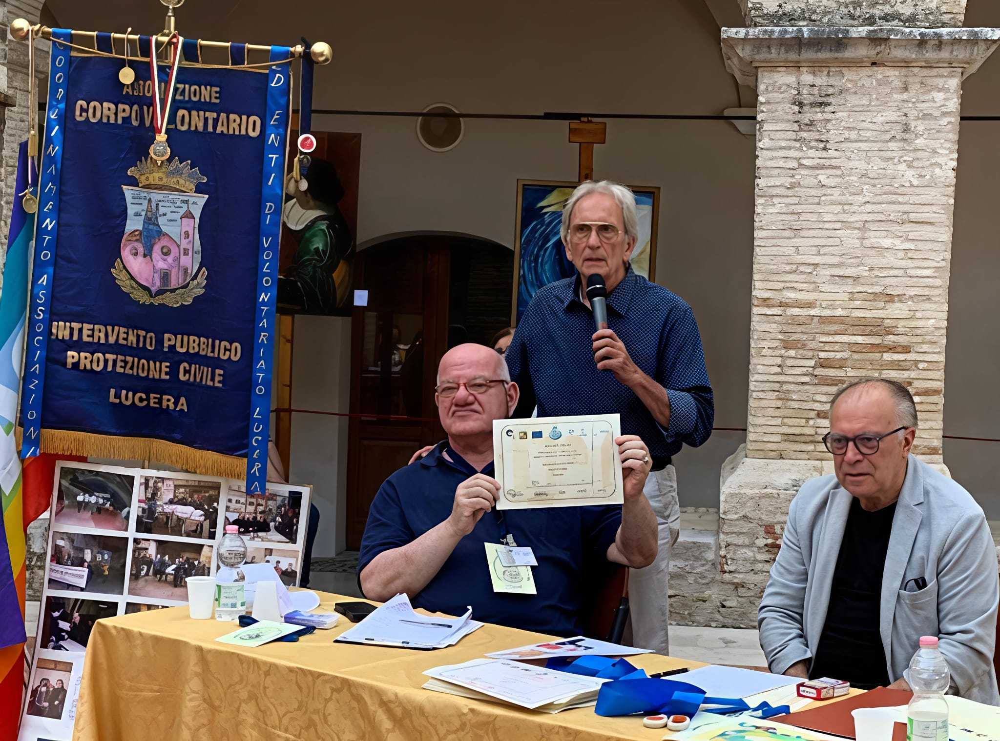

Ciò che Caino non sa
Premio “Città di Foggia”
Palazzo Dogana Foggia
20 Giugno 2026

Giacomo De Troia
Esposizioni e Riconoscimenti
Esposizione personale internazionale — Emirati Arabi Uniti
Rassegna d'arte contemporanea
Esposizione personale — replicata anche nel 2017
Personale “Il Teatro della Vita”
Collaborazione con l'Associazione Teatrale “La Falce di Luna” per l'atto unico Annuncio Ritardo, in occasione del quale viene esposto il dipinto Agli Operai di Petrarsa (96×96 cm, 2014, collezione privata) — 23 aprile 2014
Esposizione personale
Esposizione personale
Esposizione personale
Esposizione personale internazionale
Esposizione personale
Quattro personali consecutive negli anni 2002, 2007, 2010, 2012
Partecipazione con il Gruppo Galleristi Associati di Ancona — pubblicazione sulla rivista ART LEADER
Collettiva — opere quotate e pubblicate sulla rivista Artecultura diretta dal Dott. Giuseppe Martucci — novembre 2004
Personale “Pittura sul Teatro della Vita” — 4-26 novembre 2004 — testo critico del Dott. Teodosio Martucci
Esposizione personale
Esposizione personale
Esposizione personale per un mese intero — ottobre 1999
Rassegna estiva di pittura, da giugno a settembre — precedute dalla partecipazione al Castello di Montegridolfo
Ingresso nel gruppo “Arte per la Vita” fondato dal Maestro Riboni — febbraio 1999
Personale di pittura, acrilico e olio su tela
Personale “Quadri ad olio su tela” — nello stesso anno apre il laboratorio artistico “Arte Studio 95”
Prima esposizione personale — opere di grafica

Premio “Città di Foggia”
Palazzo Dogana Foggia
20 Giugno 2026

Esposizione personale
Circolo Unione Lucera
Dal 2 al 10 Maggio 2026

Mostra collettiva
Galleria “L. Schingo” San Severo
Dal 22 al 30 Aprile 2026

Direttore Artistico
Ex Convento San Pasquale Lucera
12–19 Agosto 2025
Premio Internazionale di Letteratura e Arti Visive “Ciò Che Caino Non Sa” — VII Edizione, Sezione P Violenza Donne e Minori
Opera: Innocenza rubata — Foggia, 20 giugno 2026

L'Amministrazione Comunale conferisce al Maestro Giacomo De Troia, artista e pittore autodidatta, che con oltre 35 anni di passione e talento ha portato la sua arte oltre i confini di Lucera, in ambito nazionale ed internazionale.
Il Sindaco Avv. Giuseppe Pitta — Lucera, 10 Maggio 2026

Biennale d'Arte Contemporanea “CIAO Umbria” — IV Edizione, Città di Castello

Associazione Culturale “Per una Lucera Bella” — partner ufficiale Casa Sanremo 2025
Lucera, 18 Maggio 2025

Premio di Letteratura e Arti Visive “Ciò Che Caino Non Sa” — VI Edizione, Sezione P Violenza Donne e Minori
Opera: Torneranno gli aquiloni — Foggia, 21 giugno 2025

“Per Voi, Con Noi, Per Gli Altri” — Attestato di Benemerenza e Menzione Speciale, per la sua opera a favore del volontariato. Lo stemma sociale del Corpo Volontario è un dipinto realizzato dal Maestro.
Città di Lucera, 18 Maggio 2025
Vicolorando — Estemporanea di Pittura
Associazione Turistica Pro Loco — Sant'Agata di Puglia
Premio Nazionale “Ciò Che Caino Non Sa” — V Edizione, Violenza Donne e Minori
Opera: Vittime Invisibili — Foggia
Concorso dell'Iconavetere — CULTURALMENTE
Foggia, Marzo 2019

Concorso V. Piccirillo — Monticchio








Esplora il catalogo completo delle opere di Giacomo De Troia, incluse quelle che hanno ricevuto riconoscimenti nazionali e internazionali.
Sfoglia le Opere →G. De Troia